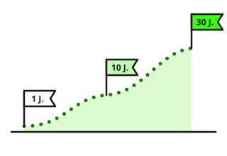

Welche Anleihe wozu passt?
Sechs typische Ziele, jedes mit Schaubild. Lesezeit: etwa 7 Minuten. Wie vier Menschen dabei vorgehen, zeigen die Anleihen-Beispiele nach Ziel.

Geld kurzfristig parken
Du weißt, wann du das Geld brauchst – in drei, sechs oder zwölf Monaten. Bis dahin soll es Zinsen bringen.
Dafür passen Anleihen mit sehr guter Bonität und kurzer Restlaufzeit. Die Fälligkeit legst du kurz vor den Termin. Bei kurzer Laufzeit schwankt der Kurs kaum.
- Laufzeit bis 1 Jahr, Fälligkeit vor dem Termin
- Schuldner sehr gute Bonität – Rating AAA oder AA
- Hinweis Für ganz kleine Beträge reicht Tagesgeld
Kurz gesagt: Fälligkeit kurz vor dem Termin – dann passt es.
Geld langfristig anlegen
Das Geld wird erst in einigen Jahren gebraucht – für die Ausbildung der Kinder, ein Haus oder den Ruhestand. Bis dahin soll es mit wenig Risiko wachsen.
Eine Anleihe sehr guter Bonität, die genau dann fällig wird, bringt über die ganze Zeit einen festen Zins. Zwischendurch schwankt der Kurs – das ist egal, solange du bis zum Ende hältst.
- Laufzeit so lang wie die Zeit bis zum Ziel, 3 bis 10 Jahre
- Schuldner sehr gute Bonität – Rating AAA oder AA
- Hinweis Kupons wieder anlegen – sonst wächst nur, was du eingezahlt hast
Der Kurs schwankt, das Ziel steht
Staatsanleihen nach Restlaufzeit ansehen →Bonität bei langer Laufzeit prüfen →Kurz gesagt: Laufzeit = Zeit bis zum Ziel. Zwischendurch nicht hinschauen.
Regelmäßig Zinsen einnehmen
Du willst, dass regelmäßig Geld aufs Konto kommt – wie eine kleine Rente. Anleihen mit festem Kupon zahlen jedes Jahr am selben Tag.
Mit mehreren Anleihen, die in verschiedenen Monaten zahlen, verteilst du das Einkommen übers Jahr. Wichtig ist ein Schuldner mit guter Bonität, damit die Zahlung auch kommt.
- Zins fester Kupon, Zinstermine in verschiedenen Monaten
- Schuldner gute Bonität – sie macht einen Zahlungsausfall unwahrscheinlich
- Hinweis Wird eine Anleihe fällig, die nächste kaufen
Zinsen übers Jahr verteilt
Drei Anleihen zu je 10.000 € mit 3 % Kupon = 900 € im Jahr, verteilt auf drei Termine.
Euro-Staatsanleihen, Kupon 3 bis 5 %, Stückelung bis 1.000 € →Bonität der Zinszahler prüfen →Kurz gesagt: Fester Kupon, feste Termine – planbares Einkommen.
Den heutigen Zins für Jahre festschreiben
Ist das allgemeine Zinsniveau gerade hoch, schreibst du es mit einer Anleihe mit längerer Laufzeit für Jahre fest.
Sinkt das allgemeine Zinsniveau später, bekommst du weiter den alten, höheren Zins. Tagesgeld folgt dagegen sofort nach unten. Steigt das allgemeine Zinsniveau weiter, verpasst du allerdings den höheren Zins – bis zur Fälligkeit.
- Laufzeit 5 bis 10 Jahre
- Zins fester Kupon – nichts Variables
- Hinweis Das Festschreiben lohnt sich vor allem, wenn das allgemeine Zinsniveau hoch ist; die Staatsanleihen seit 1970 zeigen, was hoch ist
Dein Zins bleibt, das Tagesgeld nicht
Renditen von Staatsanleihen seit 1970 ansehen →Kurz gesagt: Lange Laufzeit = der heutige Zins bleibt, auch wenn das allgemeine Zinsniveau fällt.
Mehr als 100.000 € anlegen
Die Einlagensicherung schützt Guthaben bei einer Bank nur bis 100.000 €. Größere Beträge brauchen einen anderen Schutz.
Staatsanleihen bester Bonität liegen im Depot und bleiben dein Eigentum – auch wenn die Bank pleitegeht. Sicher sind sie so lange, wie der Staat zahlt. Deshalb: Bestnote, und auf mehrere Länder und Fälligkeiten verteilen.
- Schuldner Staaten mit AAA oder AA, mehrere Länder
- Laufzeit gestaffelt, z. B. 1, 2 und 3 Jahre
- Hinweis Stückelung prüfen – viele Unternehmensanleihen gibt es erst ab 100.000 €
Beispiel-Aufteilung von 300.000 €
Bis 100.000 € je Bank schützt die Einlagensicherung, darüber der Staat als Schuldner.
Staatsanleihen nach Ländern ansehen →Bonität bei großen Beträgen prüfen →Kurz gesagt: Über 100.000 € endet die Einlagensicherung – Staatsanleihen bester Bonität sind eine Alternative zum Bankguthaben.
Schwankungen im Depot dämpfen
Ein Depot nur aus Aktien schwankt stark. Anleihen guter Bonität schwanken weniger und zahlen feste Zinsen. Als ruhiger Teil des Depots dämpfen sie die Ausschläge.
Der einfachste Weg ist ein Anleihen-ETF: Er bündelt viele Anleihen in einem Papier und verteilt so das Risiko. Wie groß der ruhige Teil sein kann, steht unter Wie viel Anleihen ins Depot?
- Laufzeit 3 bis 7 Jahre – schwankt wenig, bringt trotzdem Zins
- Schuldner gute Bonität, in Euro
- Hinweis Ein ETF hat keine Fälligkeit – sein Kurs kommt nicht von selbst auf 100 zurück
Wenn die Aktien um 20 % fallen
Die Aktien fallen um 20 %, die Anleihen bleiben stabil: Das gemischte Depot verliert nur 12 %. Oft steigen Anleihen sogar, wenn Aktien fallen – aber nicht immer: 2022 fielen beide.
Anleihen-ETFs ansehen →Kurz gesagt: Anleihen sind der ruhige Teil des Depots.
Die Seite beschreibt typische Ziele und welche Anleihen dazu passen. Sie empfiehlt keine Anlage. Die Zahlen sind vereinfacht und gerundet; Zinsen und Renditen ändern sich täglich. Fachbegriffe erklärt das Glossar.